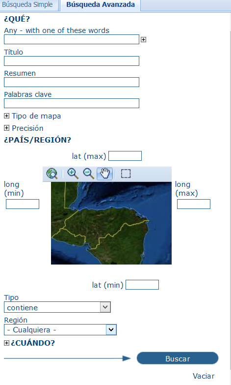

Todos los usuarios pueden utilizar las funcionalidades básicas incluidas en el panel lateral para buscar metadatos, utilizando métodos alfanuméricos y espaciales. Los resultados están listados en la página principal.
La búsqueda puede ser Simple o Avanzada
Las funciones alfanuméricas permiten localizar los recursos cuyos metadatos geoespaciales contienen los textos insertados, buscándolos globalmente o dentro campos específicos.
Las funciones espaciales permiten localizar los recursos contenidos dentro de un área, región o coordinadas geográficas deseadas.
Permite utilizar más parámetros de búsqueda que la simple:

Panel de busqueda avanzada metadatos